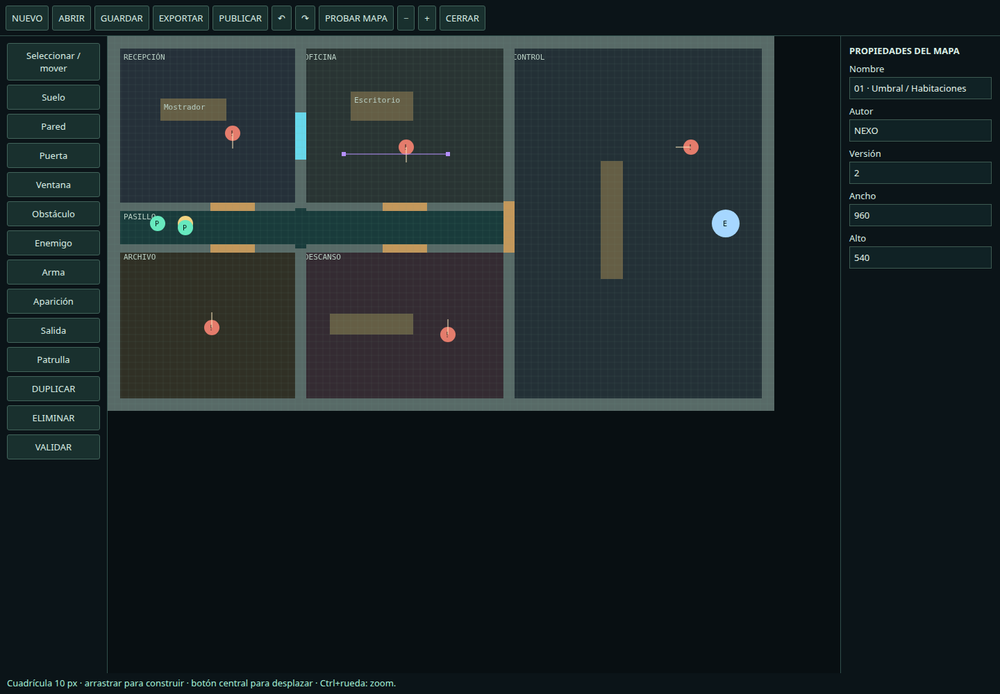

REVISIÓN DEL ARCHIVO Nexo-Inspeccion.rar
Auditoría y entrega funcional
Instrucciones · Abrir juego
Hallazgos de la inspección
| Área | Estado original y tratamiento |
|---|
| Paquete | 6 archivos, 73 351 bytes descomprimidos. HTML, cliente, dos motores, configuración y README. Sin package.json ni server.js. Copia intacta incluida en original/. |
| Modo individual | La API local ya existía; balance de seis vidas, reservas y munición. Se mantiene arranque local y se unifica simulación, con regla letal por defecto y variante configurable. |
| Cooperativo | Lobby, códigos, listo, reanudación, interpolación y controles ya estaban en el cliente. Se conservan y conectan al servidor dedicado incluido. No se dispone del código del servicio original. |
| Duplicación | Los dos motores repetían casi toda la simulación. Se extrae un núcleo común: nexo-core.js. nexo-game.js mantiene los exports de integración y el navegador conserva NexoSoloEngine. La página carga mapas y núcleo antes del cliente. |
| Movimiento y colisiones | Límites 960×540 y predicción con constantes. Ahora usan dimensiones del mapa, propiedades independientes y movimiento fraccionado; la predicción utiliza las mismas superficies, corrige saltos de reaparición y modificadores. |
| Visibilidad y proyectiles | Antes compartían todos los sólidos y una línea muestreada cada 12 px. Ahora hay reglas separadas y segmentos exactos para visión, proyectiles fraccionados y daño/penetración por superficie. |
| Mapas | La arena original se conserva como dato migrado; se agregan cuatro niveles arquitectónicos editables, normalizador, versionado y validación de accesibilidad. Ya no se instancia una ARENA fija en el motor. |
| IA | Antes perseguía directamente al objetivo y oscilaba en reposo ignorando colisiones. Ahora utiliza estados, cono visual, sonidos, memoria, A*, rutas de patrulla, puertas y elección de objetivos entre jugadores visibles. |
| Combate | Se mantienen disparos y golpes; se agregan catálogo de armas, cargador/reserva/recarga, intercambio, armas caídas, lanzamiento, derribo, ejecución y puertas ofensivas. Las suministros de munición de la arena original se conservan. |
| Interfaz | Se mantienen elementos del cliente original y se agregan selección de mapas/máscaras/armas/reglas, información de arma y combo, resumen, editor y biblioteca. Se corrige pérdida de acciones cortas entre ticks de input y pausa local al ocultar pestaña. |
| Persistencia | IndexedDB local, JSON portable, biblioteca HTTP en disco y sincronización explícita. No se presupone almacenamiento remoto ya desplegado. |
Orden de implementación aplicado
Inspección y API compartida → mapas y superficies → editor y persistencia → navegación/IA → armas e interacciones → reglas de supervivencia → máscaras → combos → HUD/resultados → servidor y pruebas de integración. Durante las pruebas se corrigieron IDs duplicados al migrar, posiciones de aparición inválidas, barridos de puertas, pulsaciones demasiado breves para el tick, referencias del inspector tras guardar y el envío de snapshots de múltiples salas.
Arquitectura de esta entrega
index.html / NEXO-JUGAR.html entrada modular / distribución autónoma
nexo-coop-client.js cliente original ampliado: salas, controles, render
maps.js + legacy-map.js datos, migración, superficies, validación
multiplayer/nexo-core.js reglas compartidas de simulación, navegación y combate
multiplayer/nexo-game.js fachada ES module para integración
nexo-tools.js editor, biblioteca IndexedDB y HUD extendido
server.js HTTP, publicación y WebSocket autoritativo
mapas-json/ niveles exportados como datos
original/ respaldo sin modificaciones
tests/ pruebas y resultados
tools/build.cjs empaquetado HTML sin dependencias
Pruebas aprobadas: 59
| Suite | Comprobaciones | Alcance |
|---|
| núcleo | 34 | Pruebas automatizadas reproducibles; ver JSON. |
| red | 12 | Dos clientes WebSocket independientes en el mismo equipo; no dos computadoras físicas. |
| navegador | 8 | Chromium real; dos contextos aislados en un solo equipo. |
| táctil | 2 | Chromium emulando dispositivo móvil; no dispositivo físico. |
| distribución autónoma | 3 | Pruebas automatizadas reproducibles; ver JSON. |
Las pruebas de núcleo no sustituyen una prueba de usabilidad. La accesibilidad de mapas se valida con cuadrícula de 20 px, radio de personaje y puertas abiertas; comprueba puntos relevantes, no cada píxel ni la calidad táctica de todos los rincones. La navegación dinámica conserva colisión con las hojas abiertas.
Servidor externo original
URL configurada en el archivo original: wss://playcalcu.onrender.com/galaxy. Resultado observado: Conexión establecida. La consulta final recibió roomList con una lista vacía. Antes hubo intentos con timeout. Esto comprueba conectividad puntual, no una partida completa, su versión de simulación, la compatibilidad con las reglas nuevas ni su seguridad.
No verificado como terminado: dos computadoras reales, móviles físicos, balance subjetivo de los cuatro niveles, despliegue/seguridad públicos y recuperación de partidas tras reinicio del servidor. No se incorporan pisos/escaleras ni contenido artístico final. El cooperativo incluido está probado localmente de extremo a extremo, no certificado en Internet.
Representación real

Captura de Chromium ejecutando la distribución; no maqueta.